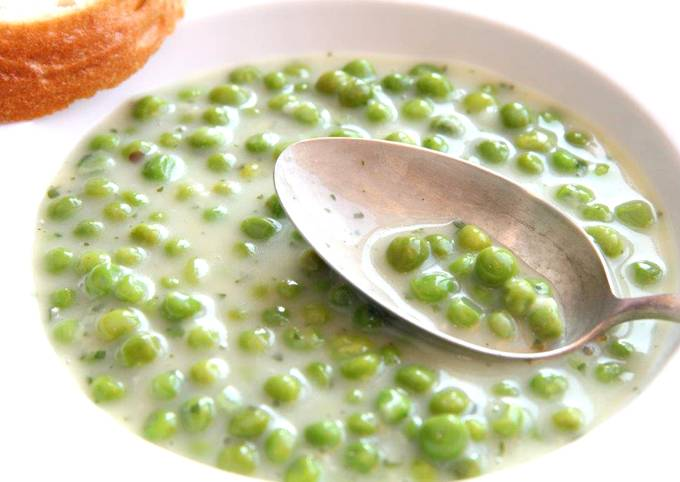

Borsófőzelék

Home
Leírás
A zöldborsófőzelék nagyon sokunk kedvece. Én így készítem, mi így nagyon szeretjük. Rendkívül gyorsan elkészül, és a finomsága mellett ez az előnye nem törpülhet el :-)) Szerintem ez az elkészítési mód egy klasszikusnak mondható, a sok közül.
Hozzávalók
- 500 g zöldborsó
- 10 ek olivaolaj
- 500 ml víz
- 1 csipet só
- 2 ek finomliszt
- 200 ml tej
- 1 csokor petrezsejem
- 1 cek cukor
Elkészítés
- 4 ek olívaolajat egy kisebb fazékban megmelegítünk, beleöntjük a borsót, csipet sóval ízesítjük.1-2 percig az olajon kevergetve pároljuk, majd hozzáöntjük a vizet, lefedjük és kb. 5 percig főzzük.
- Ezalatt a maradék olajból és a lisztből világos rántást készítünk. A borsó főzőlevéből pár kanálnyi vízzel felengedjük a rántást, majd a tejjel felhígítjuk, és csomómentesre keverjük.
- Hozzáöntjük a borsóhoz a már folyós rántást, és összeforraljuk. Ekkor tesszük hozzá a cukrot, majd a legvégén az apróra vágott petrezselymet.
- Összekeverjük, és kész is van.